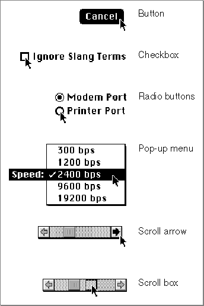
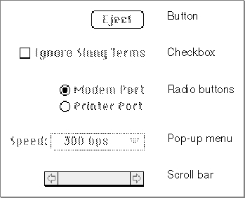

Active and Inactive Controls
You can make a control become either active or inactive. Figure 5-8 on the next page shows how theTrackControlfunction (which you use in response to a mouse-down event in a control) gives visual feedback when the user moves the cursor to an active control and presses the mouse button. In particular,TrackControlresponds to mouse- down events in active controls byFigure 5-8 Visual feedback for user selection of active controls
- displaying buttons in inverse video
- drawing checkboxes and radio buttons with heavier lines
- highlighting the titles of and displaying the items in pop-up menus
- highlighting scroll arrows
- moving outlines of scroll boxes when users drag them

Your application, in turn, should respond appropriately to mouse events involving active controls. Most often, your application waits until the user releases the mouse button before taking any action; as long as the user holds down the mouse button when the cursor is over a control, you typically let
TrackControlreact to the mouse-down event;TrackControlthen informs your application the moment the user releases the mouse button when the cursor is over an active control.As soon as the user releases the mouse button, your application should
Sometimes your application should respond even before the user releases the mouse button--that is, your application should undertake some continuous action as long as the user holds down the mouse button when the cursor is in an active control. Most typically, when the user moves the cursor to a scroll arrow or gray area and then holds down the mouse button, your application should continuously scroll through the document until the user releases the mouse button or until the user can't scroll any farther. To perform this kind of action, you define an action procedure and specify it to
- perform the task identified by the button title when the cursor is over an active button
- toggle the value of the checkbox when the cursor is over an active checkbox (The Control Manager then draws or removes the checkmark, as appropriate.)
- turn on the radio button and turn off all other radio buttons in the group when the cursor is over an active radio button
- use the new setting chosen by the user when the cursor is over an active pop-up menu
- show more of the document in the direction of the scroll arrow when the cursor is over the scroll arrow or gray area of an active scroll bar, and move the scroll box accordingly
- determine where the user has dragged the scroll box when the cursor is over the scroll box and then display the corresponding portion of the document
TrackControl;TrackControlcalls your action procedure as long as the user holds down the mouse button.Whenever it is inappropriate for your application to a respond to a mouse-down event in a control, you should make it inactive. An inactive control is one that the user can't use because it has no meaning or effect in the current context--for example, the scroll bars
in an empty window. The Control Manager continues to display an inactive control so that it remains visible, but in a manner that indicates its state to the user. As shown in Figure 5-9, the Control Manager dims inactive buttons, checkboxes, radio buttons, and pop-up menus, and it lightens the gray area and removes the scroll box from inactive scroll bars.
You can use the
HiliteControlprocedure to make any control inactive and then active again. Except for scroll bars (which you should hide using theHideControlprocedure), you should useHiliteControlto make all other controls inactive when their windows are not frontmost. You typically use controls other than scroll bars in dialog boxes. See the chapter "Dialog Manager" in this book for a discussion of how to make buttons, radio buttons, checkboxes, and pop-up menus inactive and active.You make scroll bars inactive when the document is smaller than the window in which you display it. To make a scroll bar inactive, you typically use the
SetControlMaximumprocedure to make the scroll bar's maximum value equal to its minimum value, in which case the Control Manager automatically makes the scroll bar inactive. To make it active again, you typically useSetControlMaximumto make its maximum value larger than its minimum value.